Участники
Технологические компании
- Ситроникс КТ 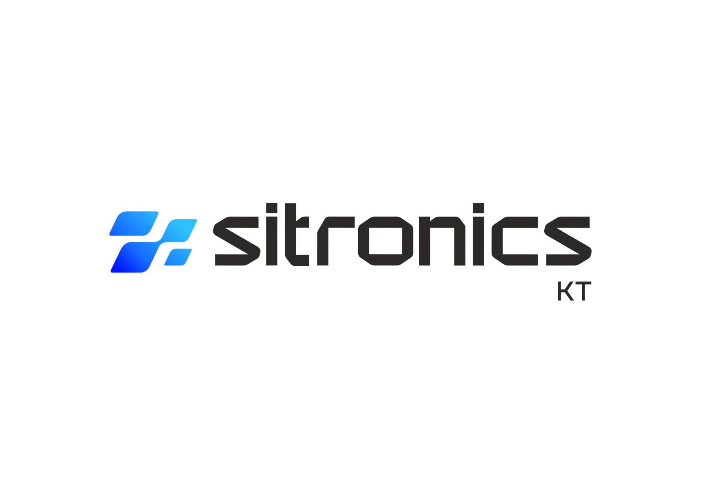
- НПП Авиационная и Морская Электроника 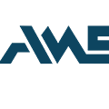
- Космическая связь 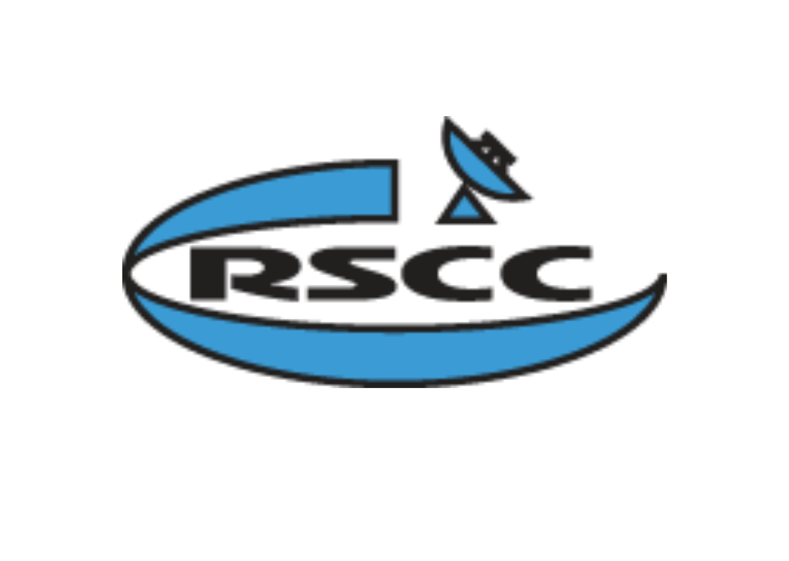
- НИИ Специальных проектов
- СКАНЭКС 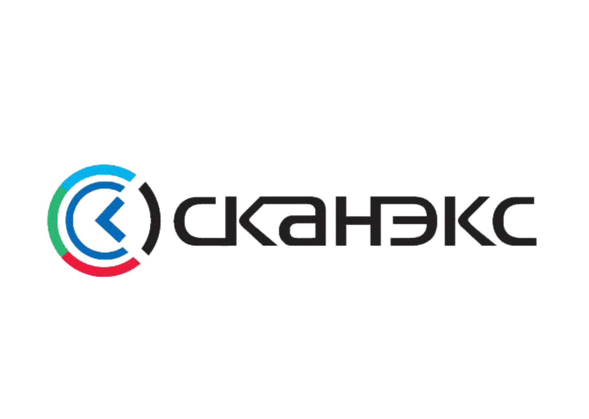
- НИИ Нептун 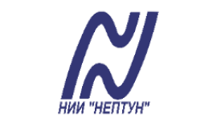
- Транзас Консалтинг 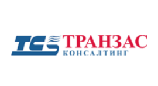
- ЦНИИ Курс 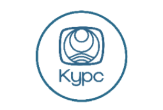
- Orange Business Services 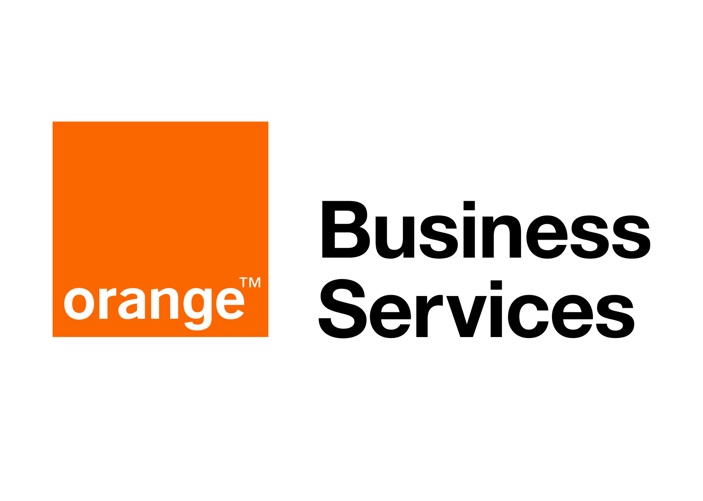
- Онежский судостроительно- судоремонтный завод 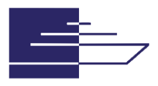
Судоходные компании
Классификационные общества
Университеты
- МГУ им. адмирала Г.И. Невельского 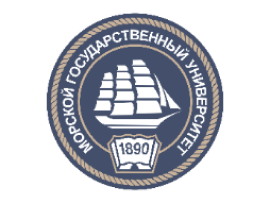
- Санкт-Петербургский Политехнический Университет Петра Великого 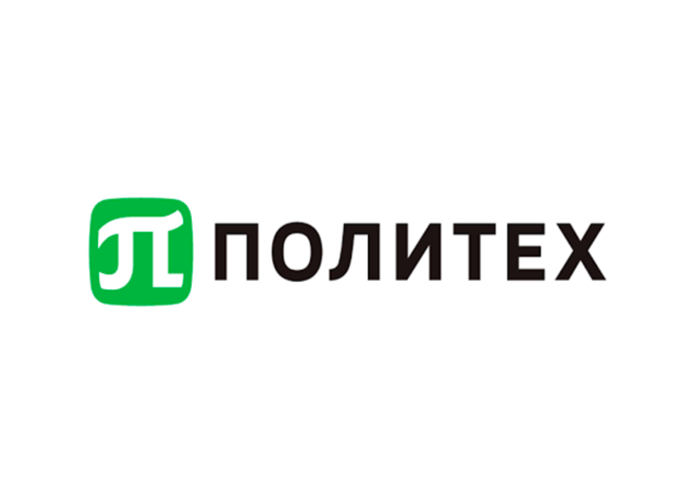
- ГУМРФ имени адмирала С.О. Макарова 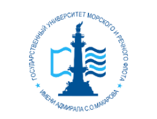